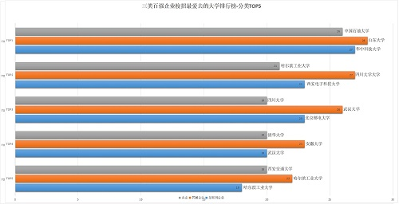
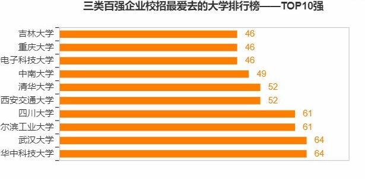
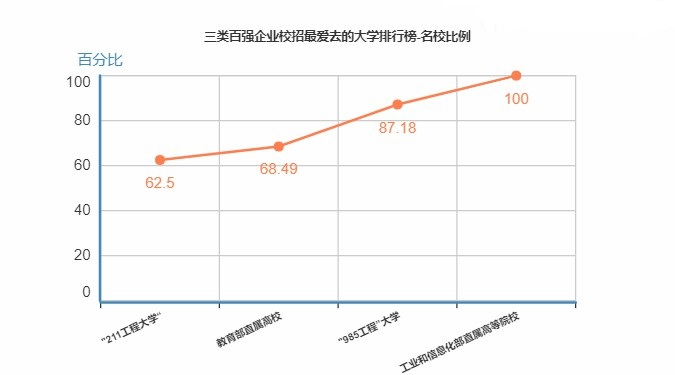

企业校招数据

百强企业校招最爱大学排行榜
◎央企百强校招最爱去TOP5大学：中国石油大学、哈尔滨工业大学、吉林大学、清华大学、西安交通大学。
◎民企百强校招最爱去TOP5大学：山东大学、四川大学、武汉大学、安徽大学、哈尔滨工业大学。
◎互联网百强校招最爱去TOP5大学：华中科技大学、北京邮电大学、西安电子科技大学、武汉大学、哈尔滨工业大学。
不同企业偏爱的大学类型也都不同，但毫无疑问，前五几乎都是985高校。

百强企业爱去校招高校排行榜TOP10
而通过对近几年的招聘数据分析，中国Top100的上市公司，90%以上每年都会选择到985、211工程大学进行校园招聘，走进非重点(二本及 以下)高校进行招聘的百强企业不足10家。所以，这也是不少人高考奔着985/211院校去的原因之一。
从这份统计的榜单来看，华中科技大学和武汉大学最受百强企业的青睐，而清华北大竟无缘前三，北大甚至被挤出了前十榜单，哈工和川大的也是佼佼者。

百强企业校招最爱大学名校比例
从这份榜单可以看到， 名校的比例都是达到60%以上的，985大学突破了87%，确实是大部分上市企业的宠儿，而工业和信息化部直属高校牛 了，几乎是所有的企业都喜欢去招聘，比例高达100%，工业和信息化部直属大学是我国工业领域的顶尖大学，其中的一流学科大多数都属于工学。
工业和信息化部直属高校总共有7所，其中5所是985，2所为211，分别是：北京航空航天大学、北京理工大学、哈尔滨工业大学、西北工业大学、哈尔滨工程大学、南京航空航天大学、南京理工大学。
数据来源：上大学网 www.sdaxue.com